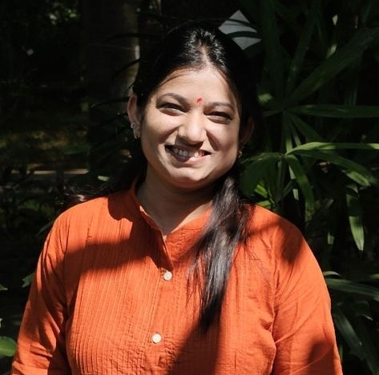

Dr. Anup Atul Kale
Professor & Dean
Nanobiotechnology, biomaterials and biomimetics, biosensors, point-of-care diagnostics, and nutraceuticals.
Professor & Dean
Nanobiotechnology, biomaterials and biomimetics, biosensors, point-of-care diagnostics, and nutraceuticals.
Associate Professor and Program Director
Bioprocess and enzyme technology, biopharmaceutical production and purification, tissue engineering, disease models, and sustainable biotechnology.

Associate Professor
Plant defence proteins and peptides, bioactive molecules, protein engineering, botanical therapeutics, molecular diversity, and evolution.

Assistant Professor
Infectious-disease biology, microbial and viral genomics, bioinformatics, host–pathogen interactions, and antimicrobial resistance.

Assistant Professor
Human gut microbiome, metagenomics and metabolomics, molecular biology, biochemistry, and phylogenetic analysis.

Assistant Professor
Molecular biophysics and biochemistry, protein aggregation, NMR spectroscopy, fluorescence methods, and neurodegenerative-disease models.

Assistant Professor
Electrochemical and optical biosensors for pathogen detection, surface functionalisation, nanomaterials, PCR-based sensing, and enzyme technology.

Assistant Professor
Microbial metabolites and biosurfactants, bioprocess engineering, plant–microbe interactions, biostimulants, circular economy, and environmental biotechnology.

Assistant Professor
Cancer cell biology, breast and ovarian cancer, steroid-hormone signalling, metastasis, and microbiomes.

Assistant Professor
Next-generation sequencing, metagenomics and microbiome analysis, whole-genome and transcriptome analysis, molecular docking, and molecular dynamics.

Assistant Professor
Genomics, transcriptomics and metagenomics; protein sequence, structural and evolutionary analysis; protein design; and computational vaccinology.

Assistant Professor
Molecular regulation of storage-root development and sprouting, transcriptomics and metabolomics, genome editing, plant transformation, and crop improvement.

Assistant Professor
Genetic and epigenetic regulation of plant haploid embryogenesis, cell totipotency and regeneration, speed breeding, photoperiod, and thermomemory.
Assistant Professor
Plant specialised metabolism, plant–microbe interactions, plant volatiles, metabolomics, and green chemistry.

Assistant Professor
Stem cell and bone biology, regenerative medicine, tissue engineering, biomaterial scaffolds, and osteomicrobiology.

Assistant Professor
Bioprocess technology, experimental design and optimisation, yeast biotechnology, bioethanol, and value-added biomolecules.
Assistant Professor
Genome stability in cancer, DNA damage and repair, cancer epigenetics, phase separation, and optogenetic tools.

Assistant Professor
Immunology, immune modulation, infection and immunity, inflammatory responses, antibody profiling, and single-cell sequencing.

Assistant Professor
Plant developmental biology, plant–pathogen interactions, combined biotic and abiotic stress, plant genetics, and molecular biology.